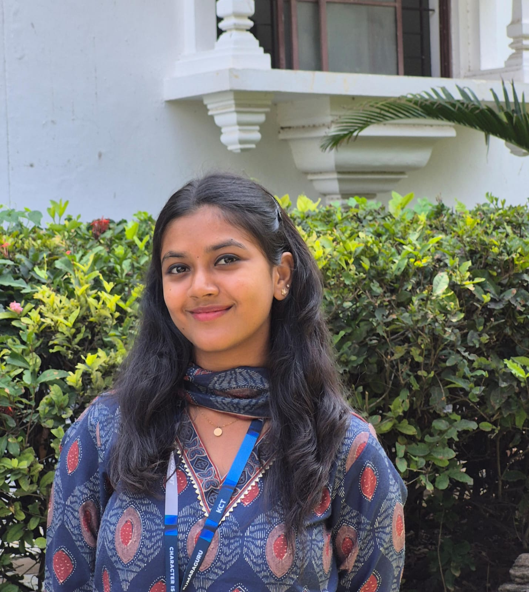

MCA Student | Data Analytics Enthusiast
I am passionate about data analysis, problem solving, and building data-driven applications. I enjoy exploring datasets, extracting insights, and developing solutions that support smarter decision making. My interests include analytics, backend development, and building intelligent systems.
With a strong foundation in programming and data structures, I strive to create efficient and scalable solutions. I am eager to contribute to projects that leverage technology for meaningful impact.
Beyond coding, I value collaboration, continuous learning, and applying analytical thinking to real-world challenges.

MCA student with strong foundations in data structures, algorithms, and object-oriented programming, and a growing interest in data analytics. Skilled in analyzing data, deriving insights, and building data-driven solutions through academic projects and collaborative initiatives. Passionate about leveraging analytical tools and programming skills to support informed decision-making.
Aug 2025 – Sep 2025
A system designed to analyze customer data and generate insights using Python. Applied data analysis techniques, algorithmic thinking, and visualization tools.
Contributed to Kestra, an Open Source Workflow Orchestration Platform. Successfully merged multiple pull requests after code review, improving functionality and code quality.
Kumaraguru College of Technology
PSG College of Technology